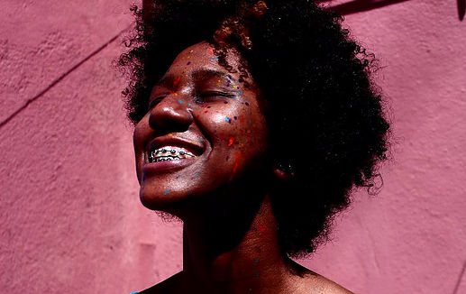

Funções / Captação de recursos
As informações de cada perfil são de responsabilidade das profissionais.
Você quer conhecer profissionais de quais estados?
Marcar/Desmarcar todos
CARREGANDO ...
 Anna Andrade (PE)
Anna Andrade (PE)
Anna Andrade
32 anos | Recife (PE)
anna.andrade@gmail.com
Bacharel em Produção Cultural (IFRJ) e Pós Graduanda em Gestão de Projetos (FG), é produtora cultural independente e atua nas áreas de audiovisual, literatura e música. No Audiovisual, trabalhou como produtora do longa-metragem "A Noite Escura da Alma" (Henrique Mendes Dantas, BA, 2015) e dos curtas-metragem "Avenida Presidente Kennedy" (2014), "Milagres" (2015) e "Frequências" (2016), dirigidos por Adalberto Oliveira (PE). Também traduziu e legendou os curtas "Tarja Preta" (Márcio Farias, PE, 2015), e "Os Filmes que Moram em Mim" (Caio Sales PE, 2015) . Atualmente está na pré produção de seu primeiro curta metragem, "Entremarés", aprovado no 9º Edital Funcultura Audiovisual.
https://www.facebook.com/milagresdoc/
Outras atividades de Anna Andrade
Coordenação de Projeto |
Direção |
Exibição |
Legendagem |
Produção
 Karina Gama (RJ)
Karina Gama (RJ)
Karina Gama
24 anos | Rio de Janeiro (RJ)
kakahgama@gmail.com
Atualmente Estudante de Produção Cultural, no Instituto Federal do Rio de Janeiro (IFRJ). Durante dois anos, entre o período de 2009 e 2011, aperfeiçoei meus conhecimentos na "Escola de Artes e Tecnologia Oi Kabum!", adquirindo aprendizagem em Design Sonoro, Vídeo, Design Gráfico e outros temas vinculados ao Audiovisual, tendo especialização em Motion Design. No período entre 2010 e 2011 tive a chance de estudar na "Escola de Cinema 5 Visões, Formação Técnica Audiovisual", onde obtive conhecimento sobre Direção, Produção, Iluminação e Fotografia, tendo também especialização em Figurino e Maquiagem.Vale ressaltar minhas atuações na área de Audiovisual com cinema e TV atuando como Continuista, auxiliando na Direção cinematográfica.
Outras atividades de Karina Gama
Continuidade |
Produção
Amostra de vídeo
 Michelle Andrews (AM)
Michelle Andrews (AM)
Michelle Andrews
32 anos | Manaus (AM)
michelleandrewsdifusao@gmail.com
Michelle Andrews, manauara, é produtora cultural, videomaker, fundadora do Coletivo Difusão (AM), autodidata atua em projetos socioculturais e ambientais desde 2004. Ministrou oficina e workshops no campo da produção audiovisual. Elabora e executa projetos de diversas linguagens desenvolvidos em território brasileiro, em especial na região Amazônica. Atualmente é coordenadora da MIVA: Mostra Internacional de Videodança, Semana do Audiovisual em Manaus e Centro Popular do Audiovisual
https://www.facebook.com/michelleandrewsnorte
Outras atividades de Michelle Andrews
Cineclubismo |
Edição |
Oficinas e cursos livres |
Roteiro
Amostra de vídeo
Natalie Matos (MG)
Natalie Matos
21 anos | Belo Horizonte (MG)
natalie.m.moura@gmail.com
A única certeza que mora em mim é a de que a cada passo aprendo algo novo e construo minha identidade. Como uma árvore que cresce regada ao amor e às dificuldades, dá bons frutos e flores, mas também amadurece antes da hora e às vezes até mesmo cai, mas, sempre lembra que tudo que se vive fortalece suas raízes. E sempre quando eu precisar vou ao meu interior e discuto comigo, para entender esse meu eu que às vezes recusa falar e prefere apenas sentir. Gradua em Cinema e Audiovisual e Técnico em Artes Visuais, hoje tenho projetos de visibilidade ao protagonismo da mulher preta e a juventude periférica.
http://nataliem-moura.wixsite.com/nataliematos
Outras atividades de Natalie Matos
Animação |
Assistência de Direção |
Captação de Som |
Cenografia |
Continuidade |
Correção de cor |
Direção |
Direção de Arte |
Direção de Fotografia |
Edição |
Fotografia Still |
Iluminação |
Mixagem e efeitos sonoros |
Pesquisa e desenvolvimento |
Preparação de Elenco |
Produção |
Roteiro
Amostra de vídeo
 Sarah Brito (RS)
Sarah Brito (RS)
Sarah Brito
34 anos | Porto Alegre (RS)
sarahbrito@gmail.com
Sarah Brito é documentarista e gestora cultural. Atua com planejamento e gestão cultural, realizando projetos em parceria com o Ministério da Cultura, IPHAN, Instituto Brasileiro de Museus, FUNARTE, Petrobrás, entre outros. Como documentarista seus projetos envolvem o diálogo entre cultura digital, memória e culturas tradicionais, especialmente de matriz afrogaucha. Entre seus trabalhos mais recentes, destaca-se o média-metragem "Batuque Gaúcho". O projeto é vencedor do prêmio Etnodoc, realizado pelo IPHAN com financiamento da Petrobrás, levado ao ar na TV Brasil em 2015. É fundadora da Puro Movimento, organização que provoca diálogo entre cultura e marcas.
http://puromovimento.cc
Outras atividades de Sarah Brito
Coordenação de Projeto |
Fotografia Still |
Pesquisa e desenvolvimento |
Produção
Amostra de vídeo
 Silvia Roberta (BA)
Silvia Roberta (BA)
Silvia Roberta
27 anos | Salvador (BA)
kakahgama@gmail.com
Possuo formação na área de Gestão do Meio Ambiente. Tenho experiência na área de audiovisual, através de produção de Documentário, captação de recurso e Direção de curtas metragens.